You can also view videos of builds and tutorials. Below are some 3D prints; click on an image to see more of that object, or visit the Mineways Flickr group for lots more. Please do submit photos of your creations to the Flickr group or email them to me - I love seeing what people do. Note: typical consumer-level 3D printers will print in just a single color; most of the color prints here were printed on ZCorp or similar sandstone printers, done by uploading the model to 3D print service companies such as Sculpteo.
Coolest giant project: modeling and printing the campus of Northwestern University, then displaying it in the engineering center's lobby. Gallery here.
 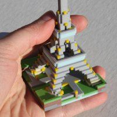
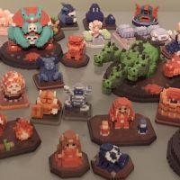
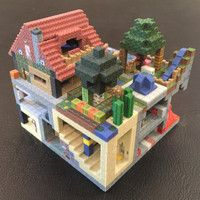
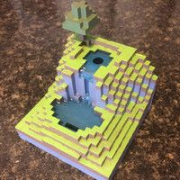
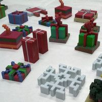
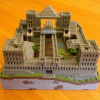
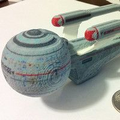
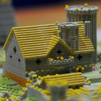
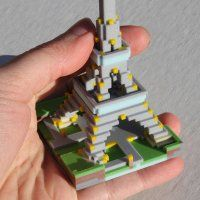
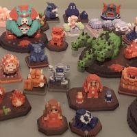
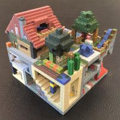
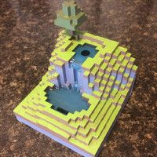
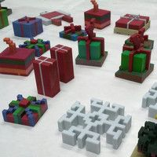
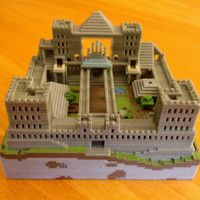
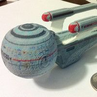
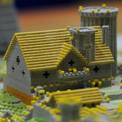
 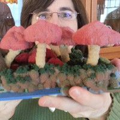
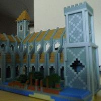
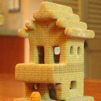
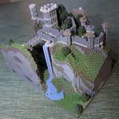
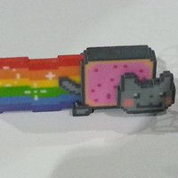
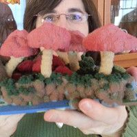
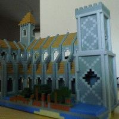
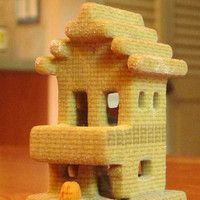
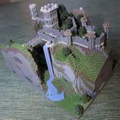
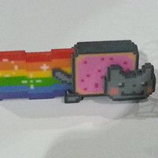
 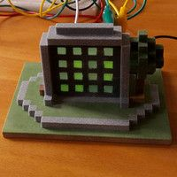
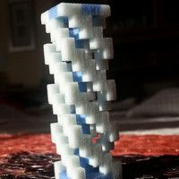
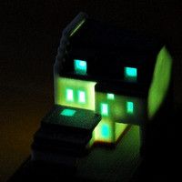
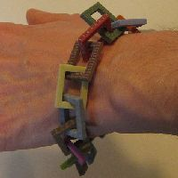
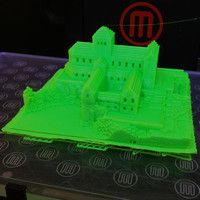
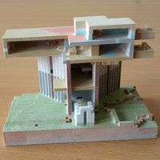
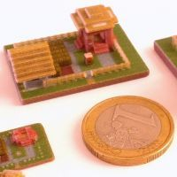
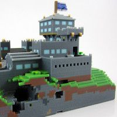
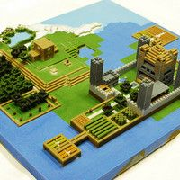
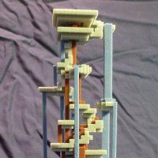
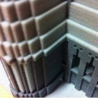
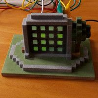
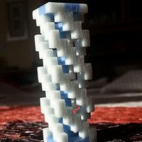
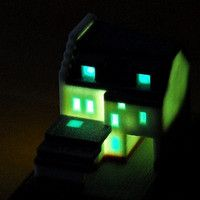
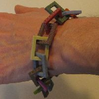
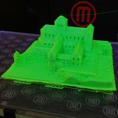
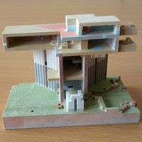
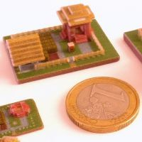
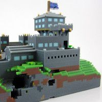
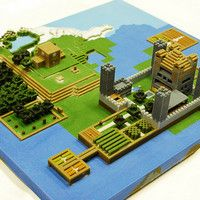
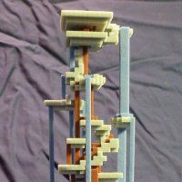
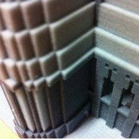
 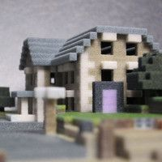
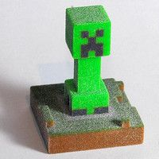
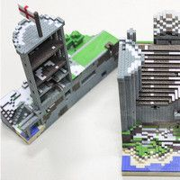
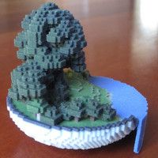
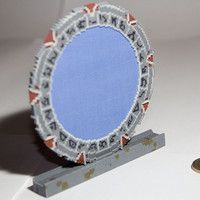
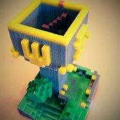
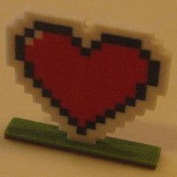
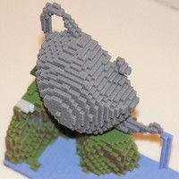
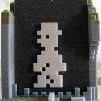
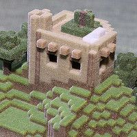
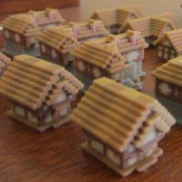
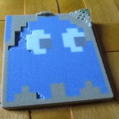
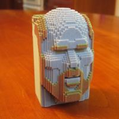
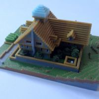
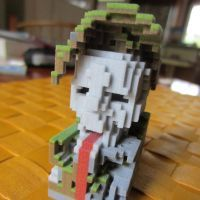
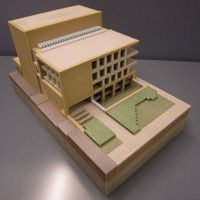
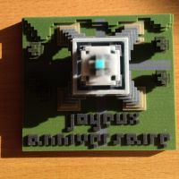
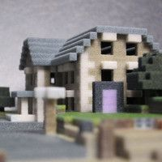
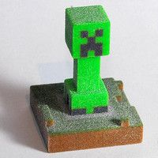
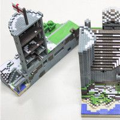
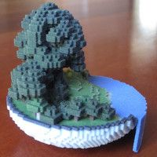
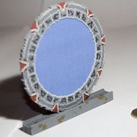
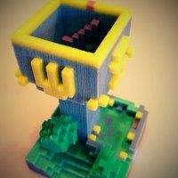
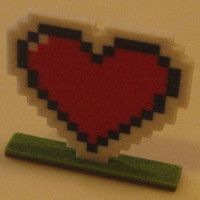
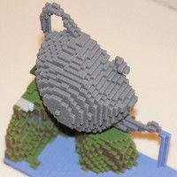
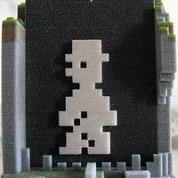
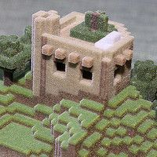
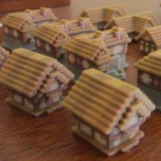
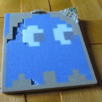
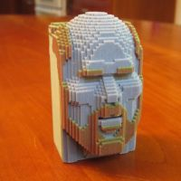
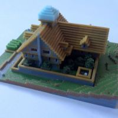
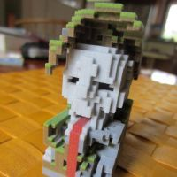
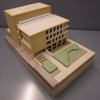
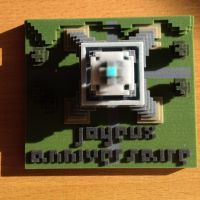
 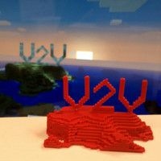
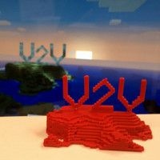
 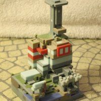
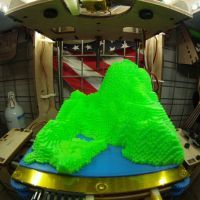
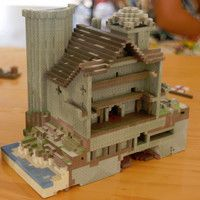
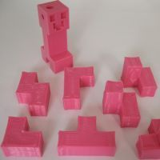
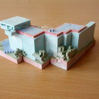
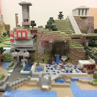
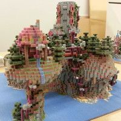
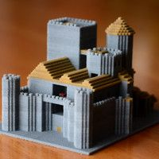
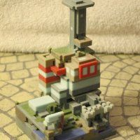
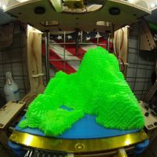
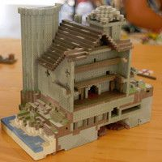
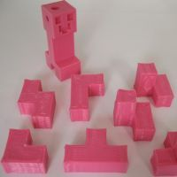
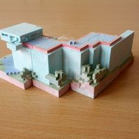
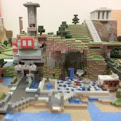
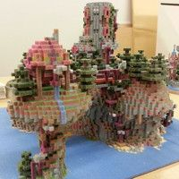
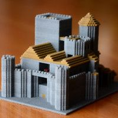


Most people use Mineways to render images and help make animations. Here is a tiny sampling of those that I like - why not?
There are other services and programs that help you make 3D prints or otherwise display Minecraft creations. My full list is here, below are a few examples (though a number of these firms no longer provide Minecraft prints or are out of business).